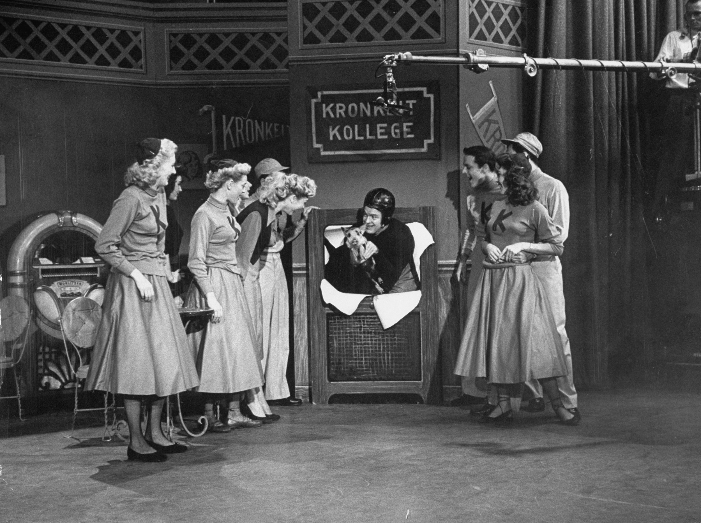

When television was in its infancy, producers modeled the new medium on radio. Popular radio shows such as police drama Dragnet and western cowboy series Gunsmoke were adapted for television, and new television shows were sponsored by single advertisers, just as radio shows had been. Television was dominated by three major networks—NBC, ABC, and CBS—and these networks accounted for more than 95 percent of all prime-time viewing until the late 1970s. Today, the television industry is far more complex. Programs are sponsored by multiple advertisers; programming is controlled by major media conglomerates; and the three major networks no longer dominate the airwaves but instead share their viewers with numerous cable channels. Several factors account for these trends within the industry, including technological developments, government regulations, and the creation of new networks.
Early television programs were often developed, produced, and supported by a single sponsor, which sometimes reaped the benefits of having its name inserted into the program’s title—Colgate Comedy Hour, Camel Newsreel, Goodyear TV Playhouse. However, as production costs soared during the 1950s (a single one-hour television show cost a sponsor about $35,000 in 1952 compared with $90,000 at the end of the decade), sponsors became increasingly unable to bear the financial burden of promoting a show single-handedly. This suited the broadcast networks, which disliked the influence sponsors exerted over program content. Television executives, in particular NBC’s Sylvester L. “Pat” Weaver, advocated the magazine concept, in which advertisers purchased one- or two-minute blocks rather than the entire program, just as magazines contained multiple advertisements from different sponsors. The presence of multiple sponsors meant that no one advertiser controlled the entire program.
Figure 9.13
Many sponsors believed that if viewers identified their favorite shows, such as the Colgate Comedy Hour, with a sponsor, they would be more likely to purchase the product being advertised.
Although advertising agencies relinquished control of production to the networks, they retained some influence over the content of the programs they sponsored. As one executive commented, “If my client sells peanut butter and the script calls for a guy to be poisoned eating a peanut butter sandwich, you can bet we’re going to switch that poison to a martini.”Horace Newcomb, ed., Encyclopedia of Television (New York: Fitzroy Dearborn, 2004), 2170. Sponsors continue to influence program content indirectly by financially supporting shows they support and pulling funding from those they do not. For example, in 1995, pharmaceutical giant Procter & Gamble, the largest television advertiser, announced it would no longer sponsor salacious daytime talk shows. The company provided producers with details about its guidelines, pulling out of shows it deemed offensive and supporting shows that dealt with controversial subject matter responsibly. Communications heavyweight AT&T took a similar path, reviewing shows after they were taped but before they aired in order to make decisions about corporate sponsorship on an individual basis.Advertising Age, “Speak Up About Talk Shows,” November 27, 1995, http://adage.com/article?article_id=84233. In 2009, advertisers used their financial might to take a stand against Fox News host Glenn Beck, who offended viewers and sponsors alike with his incendiary comments that President Obama was a “racist” and had a “deep-seated hatred for white people.” Sponsors of the Glenn Beck television talk show began to remove advertising spots from the program in protest of Beck’s comments. A spokeswoman for Progressive car insurance said, “We place advertising on a variety of programming with the goal of reaching a broad range of insurance consumers who might be interested in our products. We also seek to avoid advertising on programming that our customers or potential customers may find extremely offensive.”William Spain, “Advertisers Deserting Fox News’ Glenn Beck,” MarketWatch, August 14, 2009, http://www.marketwatch.com/story/advertisers-deserting-fox-news-glenn-beck-2009-08-14. Other shows whose advertisers have pulled ads include NBC’s long-running sketch comedy show Saturday Night Live, BET’s Hot Ghetto Mess, and ABC’s Ellen sitcom.
Corporate sponsorship does not just affect network television. Even public television has become subject to the influence of advertising. Established in 1969, Public Broadcasting ServicePublic television network established in 1969. The service was intended to enable universal access to television for viewers in rural areas and viewers who could not afford to pay for private television services. (PBS) developed out of a report by the Carnegie Commission on Educational Television, which examined the role of educational, noncommercial television on society. The report recommended that the government finance public television in order to provide diversity of programming during the network era—a service created “not to sell products” but to “enhance citizenship and public service.”Michael P. McCauley, Public Broadcasting and the Public Interest (Armonk, NY: M.E. Sharpe, 2003), 239. Public television was also intended to provide universal access to television for viewers in rural areas or viewers who could not afford to pay for private television services. PBS focused on educational program content, targeting viewers who were less appealing to the commercial networks and advertisers, such as the over-50 age demographic and children under 12.
The original Carnegie Commission report recommended that Congress create a federal trust fund based on a manufacturer’s excise tax on the sale of television sets to finance public television. Following intense lobbying by the National Association of Broadcasters, the proposal was removed from the legislation that established the service. As a result, public television subsists on viewer contributions and federal funding and the latter has been drastically reduced in recent years. Although a 2007 proposal by President George W. Bush to eliminate more than half of the federal allocation to public broadcasting ($420 million out of $820 million) was overturned, PBS has become increasingly dependent on corporate sponsorship to stay afloat. By 2006, corporate sponsors funded more than 25 percent of all public television. Sponsorship has saved many programs that would otherwise have been lost, but critics have bemoaned the creeping commercialism of public television. When PBS began selling banner advertisements on its website in 2006, Gary Ruskin, executive director of consumer group Commercial Alert, commented, “It’s just one more intrusion of the commercial ethos into an organization that was supposed to be firmly noncommercial. The line between them and the commercial networks is getting fuzzier and fuzzier.”Matea Gold, “Marketing Tie-ins Finding Their Way to PBS Sponsors,” Baltimore Sun, October 23, 2006, http://articles.baltimoresun.com/2006-10-23/features/0610230151_1_pbs-corporate-underwriters-public-television. Despite such criticisms, the drop in federal funding has forced public television executives to seek more creative ways of obtaining financial backing—for example, through online banner ads. In 2009, PBS shortened the length of time companies were required to sponsor some programs in an effort to encourage advertisers.Brian Stelter, “PBS to Shorten Time Commitments for Sponsorships,” New York Times, May 7, 2009, http://www.nytimes.com/2009/05/08/business/media/08adco.html. As of 2010, the future of PBS remained uncertain. With better-funded cable channels offering niche-interest shows that were traditionally public television’s domain (BBC nature series Planet Earth was shown on the Discovery Channel, while historical dramas John Adams and The Tudors are shown on premium cable channels HBO and Showtime), PBS is left to rely on shows that have been around for decades, such as Nova and Nature, to attract audiences.Charles McGrath, “Is PBS Still Necessary?” New York Times, February 17, 2008, http://www.nytimes.com/2008/02/17/arts/television/17mcgr.html. Only time will tell how PBS fares in the face of competition.
The period between 1950 and 1970 is historically recognized as the network eraThe period between 1950 and 1970, during which network television dominated the airwaves and accounted for more than 95 percent of prime-time viewing.. Aside from a small portion of airtime controlled by public television, the three major networks (known as the Big Three) dominated the television industry, collectively accounting for more than 95 percent of prime-time viewing. In 1986, Rupert Murdoch, the head of multinational company News Corp, launched the Fox network, challenging the dominance of the Big Three. In its infancy, Fox was at best a minor irritation to the other networks. With fewer than 100 affiliated stationsA local television or radio station associated with a particular broadcast network that carries some or all of that network’s programming. (the other networks all had more than 200 affiliates each), reaching just 80 percent of the nation’s households (compared with the Big Three’s 97 percent coverage rate), and broadcasting just one show (The Late Show Starring Joan Rivers), Fox was barely a consideration in the ratings war. During the early 1990s, these dynamics began to change. Targeting young viewers and black audiences with shows such as Beverly Hills 90210, Melrose Place, In Living Color, and The Simpsons, Fox began to establish itself as an edgy, youth-oriented network. Luring affiliates away from other networks to increase its viewership, Fox also extended its programming schedule beyond the initial 2-night-a-week broadcasts. By the time the fledgling network acquired the rights to National Football League (NFL) games with its $1.58 billion NFL deal in 1994, entitling it to 4 years of NFL games, Fox was a worthy rival to the other three broadcast networks. Its success turned the Big Three into the Big Four. In the 1994–1995 television season, 43 percent of U.S. households were watching the Big Four at any given moment during prime time.James Poniewozik, “Here’s to the Death of Broadcast,” Time, March 26, 2009, http://www.time.com/time/magazine/article/0,9171,1887840,00.html.
Fox’s success prompted the launch of several smaller networks in the mid-1990s. UPN (owned by Paramount, recently acquired by Viacom) and WB (owned by media giant Time Warner) both debuted in January 1995. Using strategies similar to Fox, the networks initially began broadcasting programs 2 nights a week, expanding to a 6-day schedule by 2000. Targeting young and minority audiences with shows such as Buffy the Vampire Slayer, Moesha, Dawson’s Creek, and The Wayans Bros., the new networks hoped to draw stations away from their old network affiliations. However, rather than repeating the success of Fox, UPN and WB struggled to make an impact. Unable to attract many affiliate stations, the two fledgling networks reached fewer households than their larger rivals because they were unobtainable in some smaller cities. High start-up costs, relatively low audience ratings, and increasing production expenses spelled the end of the “netletsA term coined by Variety magazine for minor-league networks that lack a full week’s worth of programming.,” a term coined by Variety magazine for minor-league networks that lacked a full week’s worth of programming. After losing $1 billion each, parent companies CBS (having split from Viacom) and Time Warner agreed to merge UPN and WB, resulting in the creation of the CW network in 2006. Targeting the desirable 18–34 age group, the network retained the most popular shows from before the merger—America’s Next Top Model and Veronica Mars from UPN and Beauty and the Geek and Smallville from WB—as well as launching new shows such as Gossip Girl and The Vampire Diaries. Despite its cofounders’ claims that the CW would be the “fifth great broadcast network,” the collaboration got off to a shaky start. Frequently outperformed by Spanish-language television network Univision in 2008 and with declining ratings among its target audience, critics began to question the future of the CW network.Melissa Grego, “How The CW Stays Undead,” Broadcasting and Cable, February 1, 2010, http://www.broadcastingcable.com/article/446733-How_The_CW_Stays_Undead.php. However, the relative success of shows such as Gossip Girl and 90210 in 2009 gave the network a foothold on its intended demographic, quashing rumors that co-owners CBS Corporation and Warner Bros. might disband the network. Warner Bros. Television Group President Bruce Rosenblum said, “I think the built-in assumption and the expectation is that the CW is here to stay.”Scott Collins, “With Ratings Comeback, has CW Finally Turned the Corner?” Los Angeles Times, April 7, 2009, http://latimesblogs.latimes.com/showtracker/2009/04/last-week-the-cw-scored-its-best-ratings-in-nearly-five-months-ordinarily-this-might- not-sound-like-huge-news-but-cw-is-a.html.
Figure 9.14

Despite launching several new shows geared toward its target demographic, the CW remains fifth in the network rankings.
A far greater challenge to network television than the emergence of smaller competitors was the increasing dominance of cable television. Between 1994 and 2009, the percentage of U.S. households watching the Big Four networks during prime time plummeted from 43 percent to 27 percent.James Poniewozik, “Here’s to the Death of Broadcast,” Time, March 26, 2009, http://www.time.com/time/magazine/article/0,9171,1887840,00.html. Two key factors influenced the rapid growth of cable television networks: industry deregulationThe removal of government regulations from an industry. Government deregulation of the cable industry in the 1980s enabled its extensive growth throughout the next two decades. and the use of satellites to distribute local television stations around the country.
During the 1970s, the growth of cable television was restricted by FCC regulations, which protected broadcasters by establishing franchising standards and enforcing anti-siphoning rules that prevented cable from taking sports and movie programming away from the networks. However, during the late 1970s, a court ruled that the FCC had exceeded its authority, and the anti-siphoning rules were repealed. This decision paved the way for the development of cable movie channels, contributing to the exponential growth of cable in the 1980s and 1990s. Further deregulation of cable in the 1984 Cable Communications Policy Act removed restrictions on cable rates, enabling operators to charge what they wanted for cable services as long as there was effective competition to the service (a standard that over 90 percent of all cable markets could meet). Other deregulatory policies during the 1980s included the eradication of public-service requirements and the elimination of regulated amounts of advertising in children’s programming, expanding the scope of cable channel stations. Deregulation was intended to encourage competition within the industry but instead enabled local cable companies to establish monopolies all over the country. In 1989, U.S. Senator Al Gore of Tennessee commented, “Precipitous rate hikes of 100 percent or more in one year have not been unusual since cable was given total freedom to charge whatever the market will bear…. Since cable was deregulated, we have also witnessed an extraordinary concentration of control and integration by cable operators and program services, manifesting itself in blatantly anticompetitive behavior toward those who would compete with existing cable operators for the right to distribute services.”Adam M. Zaretsky, “The Cable TV Industry and Regulation,” Regional Economist, July 1995, http://research.stlouisfed.org/publications/regional/95/07/CableTV.pdf. The FCC reintroduced regulations for basic cable rates in 1992, by which time more than 56 million households (over 60 percent of the households with televisions) subscribed to a cable service.
The growth of cable television was also assisted by a national satellite distribution system. Pioneered by Time Inc., which founded cable network company HBO, the corporation used satellite transmission in 1975 to beam the “Thrilla from Manila”—the historic heavyweight boxing match between Muhammad Ali and Joe Frazier—into people’s homes. Shortly afterward, entrepreneur Ted Turner, owner of independent Atlanta-based station WTBS, uplinked his station’s signal onto the same satellite as HBO, enabling cable operators to downlink the station on one of their channels. Initially provided free to subscribers to encourage interest, the station offered television reruns, wrestling, and live sports from Atlanta. Having created the first “superstation,” Turner expanded his realm by founding 24-hour news network CNN in 1980. At the end of the year, 28 national programming services were available, and the cable revolution had begun. Over the next decade, the industry underwent a period of rapid growth and popularity, and by 1994 viewers could choose from 94 basic and 20 premium cable services.
Figure 9.15

The 1975 “Thrilla from Manila” was one of the first offerings by HBO.
Because the proliferation of cable channels provided viewers with so many choices, broadcasters began to move away from mass-oriented programming in favor of more targeted shows. Whereas the broadcast networks sought to obtain the widest audience possible by avoiding programs that might only appeal to a small minority of viewers, cable channels sought out niche audiences within specific demographic groups—a process known as narrowcastingThe process of seeking out a niche audience within a particular demographic group as opposed to seeking the widest possible audience.. In much the same way that specialist magazines target readers interested in a particular sport or hobby, cable channels emphasize one topic, or group of related topics, that appeal to specific viewers (often those who have been neglected by broadcast television). People interested in current affairs can tune into CNN, MSNBC, Fox News, or any number of other news channels, while those interested in sports can switch on ESPN or TSN (The Sports Network). Other channels focus on music, shopping, comedy, science fiction, or programs aimed at specific cultural or gender groups. Narrowcasting has proved beneficial for advertisers and marketers, who no longer need to time their communications based on the groups of people who are most likely to watch television at certain times of the day. Instead, they concentrate their approach on subscription channels that appeal directly to their target consumers.
The popularity of cable television has forced the Big Four networks to rethink their approach to programming over the past three decades. Because of the narrowcasting mode of distribution and exhibition, cable television has offered more explicit sexual and violent content than broadcast television does. To compete for cable channels’ viewing audience, broadcast networks have loosened restrictions on graphic material and now frequently feature partial nudity, violence, and coarse language. This has increased viewership of mildly controversial shows such as CSI, NCIS, Grey’s Anatomy, and Private Practice, while opening the networks to attacks from conservative advocacy groups that object to extreme content.
The broadcast networks are increasingly adapting narrowcasting as a programming strategy. Newer networks, such as the CW, deliberately target the 18–34 age group (women in particular). Since its inception, the CW has replaced urban comedies such as Everybody Hates Chris with female-oriented series such as Gossip Girl and The Vampire Diaries. Older networks group similar programs that appeal to specific groups in adjacent time slots to retain viewers for as long as possible. For example, ABC sitcoms Modern Family and Cougar Town run back to back, while Fox follows reality police series Cops with crime-fighting show America’s Most Wanted.
Despite responding to challenges from cable, the broadcast networks’ share of the total audience has declined each year. Between 2000 and 2009, the networks saw their numbers drop by around 8 million viewers.Robert Bianco, “The Decade in Television: Cable, the Internet Become Players,” USA Today, December 29, 2009, http://www.usatoday.com/life/television/news/2009-12-28-decadeTV28_CV_N.htm.
Figure 9.16

Increased competition from cable channels has caused a steady decline in the networks’ audience ratings.
Please respond to the following short-answer writing prompts. Each response should be a minimum of one paragraph.
Choose one of the Big Four networks and print out its weekly programming schedule. Watch the network’s prime-time programs over the course of a week, noting the target demographic for each show. Observe the advertising sponsors that support each show and compare how the products and services fit with the intended audience.